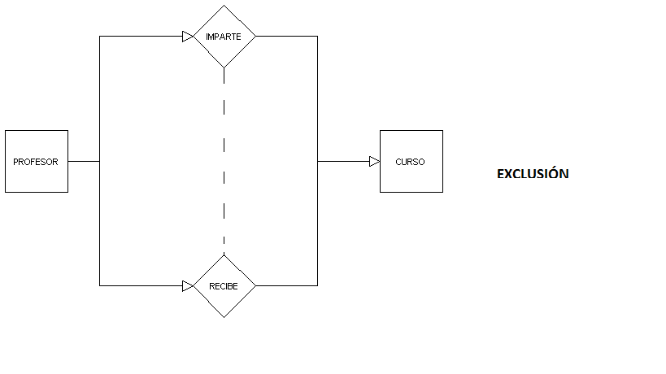
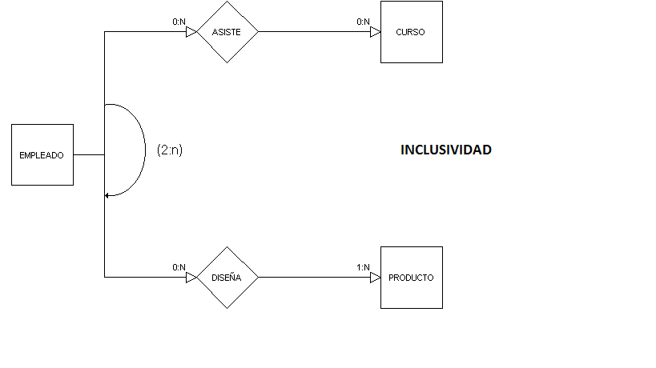
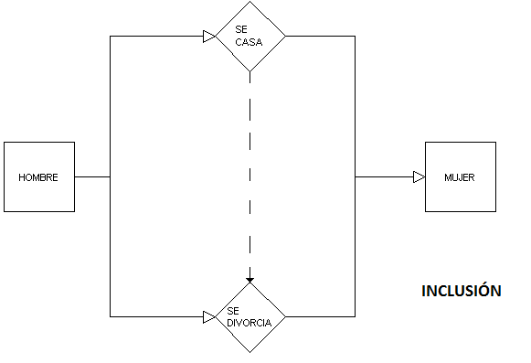
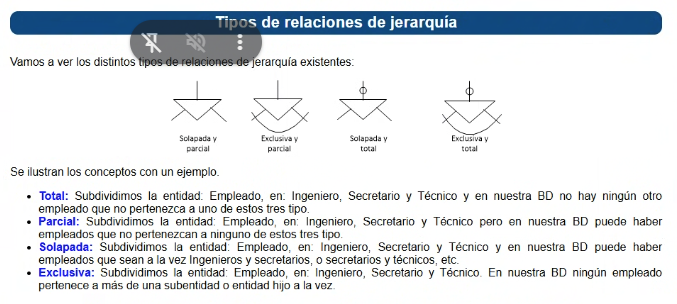
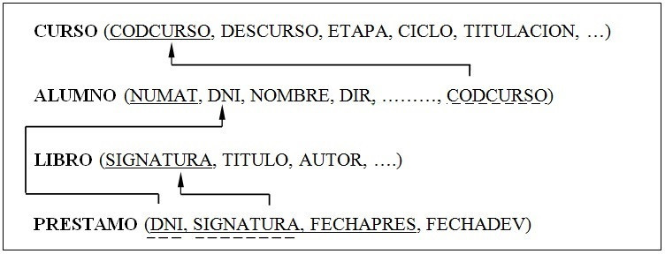
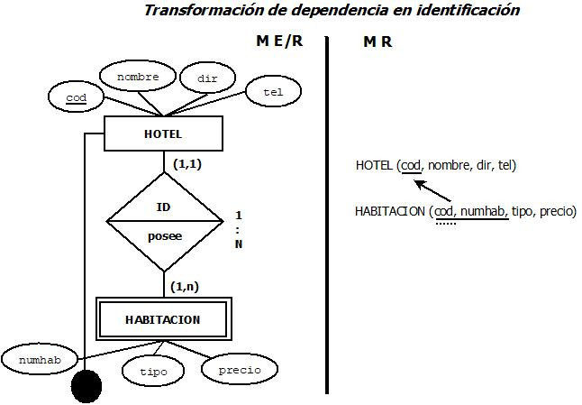
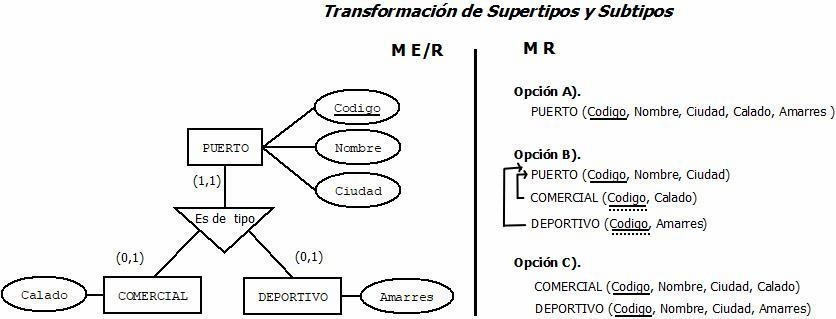
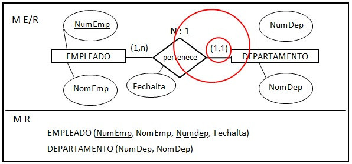
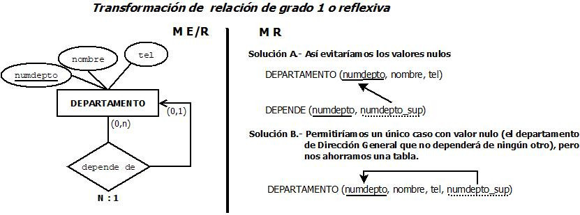

Modelo Entidad-Relación Extendido
Diseño conceptual avanzado: Entidades Débiles (Existencia e Identificación), Restricciones Adicionales (Inclusión, Exclusión y Semánticas), Jerarquías en Subclases (Herencia y Relaciones Propias) y Relaciones Reflexivas (Recursivas y Roles de Cardinalidad).
Índice General del Tema
6 Bloques Didácticos · Navegación Directa- 01 Entidades Débiles y Normalización de Atributos
- 02 Restricciones Adicionales en Relaciones
- 03 Modelo E/R Extendido: Jerarquías y Relaciones en Subclases
- 04 Relaciones Reflexivas (Recursivas)
- 05 El Modelo Relacional y Reglas de Transformación (E/R a Tablas)
- 06 Autoevaluación Interactiva (8 Preguntas Tipo Test)
1. Entidades Débiles#
Una entidad débil es aquella que no puede existir en la base de datos sin estar vinculada a una entidad fuerte. Se dividen en dos tipos:
1. Dependencia en Existencia (E)
La entidad débil tiene su propia clave primaria completa y única. Sin embargo, por reglas de negocio, si se elimina la entidad fuerte, la entidad débil también debe borrarse del sistema.
Entidades EMPLEADO (fuerte) y FAMILIAR (débil). El familiar tiene su propio DNI (clave principal), pero si el empleado es despedido y borrado del sistema, los datos de su familiar también se eliminan obligatoriamente.
DNI_emp VARCHAR(9) PRIMARY KEY,
Nombre VARCHAR(50),
Salario DECIMAL(10,2)
);
CREATE TABLE FAMILIAR (
DNI_fam VARCHAR(9) PRIMARY KEY, -- Clave primaria propia y completa
Parentesco VARCHAR(30),
Fecha_nac DATE,
DNI_emp VARCHAR(9) NOT NULL,
FOREIGN KEY (DNI_emp) REFERENCES EMPLEADO(DNI_emp) ON DELETE CASCADE
);
2. Dependencia en Identificación (I)
La entidad débil no tiene una clave primaria completa. Para ser identificada de forma única en el sistema, necesita unir su atributo clave (clave parcial) con la clave primaria de la entidad fuerte de la que depende.
Entidades SALA (fuerte) y MESA (débil). El atributo Num_mesa (ej. Mesa 1) se repite en varias salas. Para identificar una mesa exacta, necesita heredar el código de la sala (ej. Sala A - Mesa 1).
Cod_sala VARCHAR(10) PRIMARY KEY,
Capacidad INT
);
CREATE TABLE MESA (
Cod_sala VARCHAR(10), -- Clave foránea del fuerte
Num_mesa INT, -- Clave parcial o discriminante
Comensales INT,
PRIMARY KEY (Cod_sala, Num_mesa), -- PK obligatoriamente compuesta
FOREIGN KEY (Cod_sala) REFERENCES SALA(Cod_sala) ON DELETE CASCADE
);
1.3 Tabla Comparativa: Dependencia en Existencia (E) vs. Identificación (I)
| Criterio de Diseño | Dependencia en Existencia (E) | Dependencia en Identificación (I) |
|---|---|---|
| Clave propia | Sí posee Clave primaria completa y única (ej. DNI del familiar). | No posee Clave completa; solo dispone de una clave parcial o discriminante. |
| Origen de la debilidad | Regla de negocio: si se borra el titular fuerte, la débil carece de sentido operativo. | Imposibilidad matemática de identificación unívoca sin el identificador de la entidad fuerte. |
| Clave Primaria Relacional (PK) | PK = (DNI_fam)FK a Empleado con cláusula ON DELETE CASCADE |
PK = (Cod_sala, Num_mesa)Clave compuesta formada por la PK fuerte + clave parcial |
| Simbología gráfica E-R | Rectángulo simple estándar + etiqueta (E) en el rombo de relación. |
Doble rectángulo en la entidad débil + Doble rombo en la relación (I). |
| Subrayado de atributo clave | Subrayado continuo y sólido (clave primaria normal). | Subrayado discontinuo o a trazos (clave parcial). |
| Ejemplo de examen | EMPLEADO (DNI) y FAMILIAR (DNI_fam). |
SALA (Cod_sala) y MESA (Num_mesa). |
1.4 Entidad Fuerte vs. Entidad Débil (por Identificación)
La existencia semántica independiente y la capacidad de identificación unívoca.
Posee atributos suficientes para formar una Clave Primaria (PK) propia. Tiene significado independiente en el modelo (ej. AUTOR). Se representa con un rectángulo simple.
Carece de atributos suficientes para formar una PK propia. Depende estructural y semánticamente de una entidad fuerte para ser identificada y tener sentido (ej. ESTANTERÍA carece de contexto sin un ALMACÉN).
- Se dibuja con un rectángulo de doble línea.
- Se une a su entidad fuerte mediante un rombo de doble línea.
- Su cardinalidad hacia la entidad fuerte es estrictamente (1,1).
- Aporta un atributo discriminador (clave parcial) que se subraya con línea discontinua y se concatena con la PK de la fuerte para formar su identificador único.
1.5 Atributo vs. Entidad (Manejo de la multiplicidad)
La atomicidad del dato frente a la necesidad de almacenar listas o estructuras compuestas.
Representa un valor atómico, único y singular para cada instancia de la entidad (ej. el año de fundación, el nombre).
Representa datos multivaluados (colecciones de valores para una misma instancia) o datos con estructura interna.
El modelo relacional no admite almacenar múltiples valores (listas) en un único campo. Todo dato definido en plural en el enunciado para una misma entidad (ej. "teléfonos de contacto", "histórico de periodos") debe extraerse obligatoriamente como una nueva entidad (habitualmente débil) conectada mediante una relación 1:N.
Restricciones Adicionales
Son reglas de negocio que limitan cómo las entidades participan en las relaciones y que no se pueden expresar solo con las cardinalidades numéricas.
1. Restricción de exclusividad (Elegir un único camino)
Tienes una entidad conectada a dos relaciones diferentes. La regla dicta que un registro concreto solo tiene permiso para existir en una de esas dos relaciones. Si metes el dato en la primera, el sistema bloquea su entrada en la segunda para siempre.
Entidad EMPLEADO unida a las relaciones DISEÑA y FABRICA. Si guardas al empleado "Carlos" en la relación que diseña, la base de datos te dará error si intentas registrar a "Carlos" en la relación que fabrica. O es uno, o es otro.
2. Restricción de exclusión (Incompatibilidad de la misma pareja)
Tienes dos entidades conectadas por dos relaciones distintas. La regla dice que la misma pareja exacta de datos no puede guardarse en ambas relaciones a la vez. Los datos pueden participar en ambas relaciones por separado con otras combinaciones, pero nunca haciendo la misma pareja.
Entidades PROFESOR y CURSO unidas por las relaciones IMPARTE y RECIBE. El profesor "Paco" y el curso "Bases de Datos". Paco no puede estar guardado impartiendo y recibiendo ese mismo curso a la vez. O lo imparte, o lo recibe.

3. Restricción de inclusividad (Requisito de cantidad mínima)
Es un condicional basado en un contador. Para que el sistema te deje guardar un dato en la "Relación B", primero va a contar cuántas veces aparece ese mismo dato en la "Relación A". Si no llega al mínimo exigido, no te deja guardarlo.
Entidad EMPLEADO unida a las relaciones ASISTE (a cursos) y DISEÑA (productos). Para que el sistema te deje registrar que un empleado diseña un producto, exige comprobar que ese empleado tiene al menos 2 registros previos en la relación de asistir a cursos.

4. Restricción de inclusión (Requisito de pareja previa)
Es un condicional de historial. Para que el sistema te deje unir a dos datos concretos en la "Relación B", te exige obligatoriamente que esos dos mismos datos exactos ya estén guardados y unidos previamente en la "Relación A".
Entidades HOMBRE y MUJER unidas por las relaciones SE_CASA y SE_DIVORCIA. Para poder meter a "Juan" y "Ana" en la relación de divorcio, el sistema comprueba primero que existe un registro previo de "Juan" y "Ana" juntos en la relación de casados. Si no existen ahí, da error.

2.5 Tabla Comparativa: Las 4 Restricciones Adicionales
| Restricción | Estructura | Regla Clave | Ejemplo Práctico | Notación Gráfica E-R |
|---|---|---|---|---|
| 1. Exclusividad | 1 entidad, 2 relaciones | Un registro concreto solo puede existir en una de las dos relaciones (bloqueo permanente en la otra). | EMPLEADO: O DISEÑA o FABRICA (o uno u otro). |
Camino Único Restricción exclusiva en la entidad. |
| 2. Exclusión | 2 entidades, 2 relaciones | La misma pareja exacta no puede estar en ambas relaciones a la vez (incompatibilidad de la misma pareja). | PROFESOR y CURSO: Paco no puede IMPARTIR y RECIBIR el mismo curso a la vez. |
Línea discontinua Entre rombos de relación. |
| 3. Inclusividad | 1 entidad hacia 2 relaciones | Condicional por contador: exige un mínimo de apariciones en la relación A para acceder a la B. | EMPLEADO: Al menos 2 cursos en ASISTE para poder estar en DISEÑA. |
Arco con (m:n) Flecha con rango mínimo de contador. |
| 4. Inclusión | 2 entidades, 2 relaciones | Condicional de historial: exige que la misma pareja exacta esté previamente unida en la relación A. | HOMBRE y MUJER: Deben estar unidos en SE_CASA para poder figurar en SE_DIVORCIA. |
Flecha discontinua Desde relación previa hacia la dependiente. |
Modelo E/R Extendido: Jerarquías y Relaciones en Subclases
Concepto de Jerarquía (Herencia):
Se utiliza cuando una entidad general (Padre/Superclase) se divide en entidades más específicas (Hijos/Subclases). Se rige por la regla lógica de "ES UN" (ej. un Trabajador es un Alumno). Los hijos heredan los atributos del padre.
Definición: Estructura donde una entidad genérica (superclase) se divide en subentidades específicas (subclases) que heredan sus atributos.
Detección (Regla "Es-Un"): La relación entre los conceptos debe cumplir estrictamente la premisa lógica de que la subclase es un tipo de superclase (ej. "Un Libro es un tipo de Artículo").
Representación E/R: Se dibuja mediante un triángulo invertido, no mediante un rombo.
Si la conexión lógica entre ambos conceptos denota pertenencia, ubicación o interacción (ej. "Una Estantería está en un Almacén", o "Un Motor pertenece a un Avión"), debe modelarse mediante una relación estándar (rombo N:M, 1:N, etc.), nunca como una jerarquía.
1. Reglas de Configuración de Jerarquías
Toda jerarquía se define cruzando dos normas obligatorias: la regla de cobertura (Total vs. Parcial) y la regla de solapamiento (Solapada vs. Exclusiva).
Obliga a que absolutamente todos los registros de la entidad padre pertenezcan a alguna de las entidades hijas. Es imposible guardar un registro genérico que no baje a una de las subcategorías.
Si la entidad padre es Empleado y las hijas son Ingeniero, Secretario y Técnico, en la base de datos no hay ningún otro empleado que no pertenezca obligatoriamente a uno de estos tres tipos.
Permite que existan registros en la entidad padre que NO pertenezcan a ninguna de las entidades hijas. El sistema acepta guardar datos genéricos sin tener que categorizarlos forzosamente.
En nuestra base de datos puede haber Empleados que no pertenezcan a ninguno de esos tres tipos (Ingeniero, Secretario o Técnico), quedándose simplemente almacenados en la caja principal de Empleado.
Permite la simultaneidad o intersección. Un mismo registro de la entidad padre tiene total libertad para pertenecer a múltiples entidades hijas al mismo tiempo.
La base de datos permite que haya Empleados que sean a la vez Ingenieros y Secretarios, o Secretarios y Técnicos, etc.
Impone una restricción de incompatibilidad. Un registro de la entidad padre solo puede pertenecer a UNA de las entidades hijas de forma estricta. Son caminos mutuamente excluyentes.
Ningún Empleado de nuestra base de datos puede pertenecer a más de una subentidad o entidad hijo a la vez (si se le registra como Ingeniero, es imposible que el sistema le deje ser también Secretario).

2. Relaciones Propias de una Subclase (Caso Trabajador - Empresa)
Cuando un enunciado indica que una entidad Hija (ej. Trabajador) tiene datos asociados que conforman un bloque propio con su propio identificador (ej. CIF, nombre, dirección de la empresa), no se añaden como atributos sueltos al Hijo.
Creación: Se crea una nueva entidad externa (ej. EMPRESA).
Conexión: Se dibuja una relación (rombo) que conecte únicamente al Hijo correspondiente (TRABAJADOR) con la nueva entidad (EMPRESA). El resto de hijos (ej. DESEMPLEADO) no participan en esta relación.
3. Deducción de Cardinalidad por el Enunciado
Para definir si un trabajador puede pertenecer a varias empresas, hay que ceñirse a la redacción literal del problema:
Enunciado singular: Si el texto dice "la empresa en la que trabajan", asume una relación 1:N. Un trabajador está en 1 única empresa, y la empresa tiene a N trabajadores. Es la opción más segura en un examen.
Enunciado plural / Mundo real: Si el texto planteara el pluriempleo ("las empresas para las que trabajan"), la relación sería N:M (varios trabajadores en varias empresas).
CREATE TABLE ALUMNO (
Id_alumno INT PRIMARY KEY,
Nombre VARCHAR(100) NOT NULL,
DNI VARCHAR(9) UNIQUE NOT NULL
);
-- 2. Entidad Externa (EMPRESA):
CREATE TABLE EMPRESA (
CIF VARCHAR(9) PRIMARY KEY,
Nombre VARCHAR(100) NOT NULL,
Direccion VARCHAR(150)
);
-- 3. Tabla Hija TRABAJADOR (Relación 1:N singular -> CIF foráneo en TRABAJADOR):
CREATE TABLE TRABAJADOR (
Id_alumno INT PRIMARY KEY, -- PK compartida con el Padre
Puesto VARCHAR(50),
CIF_empresa VARCHAR(9) NOT NULL, -- FK a Empresa singular (1:N)
FOREIGN KEY (Id_alumno) REFERENCES ALUMNO(Id_alumno) ON DELETE CASCADE,
FOREIGN KEY (CIF_empresa) REFERENCES EMPRESA(CIF)
);
-- 4. Tabla Hija DESEMPLEADO (No participa en relación con Empresa):
CREATE TABLE DESEMPLEADO (
Id_alumno INT PRIMARY KEY, -- PK y FK al Padre
Subsidio DECIMAL(10,2),
FOREIGN KEY (Id_alumno) REFERENCES ALUMNO(Id_alumno) ON DELETE CASCADE
);
Relaciones Reflexivas
Relación en la que una entidad se asocia consigo misma.
El sujeto y el objeto de la acción descrita en el enunciado pertenecen al mismo conjunto de datos (ej. "Un empleado supervisa a otro empleado"; "Una pieza contiene otras piezas").
Una única entidad conectada mediante dos líneas distintas a una misma relación (rombo).
Para determinar la cardinalidad, se debe analizar la participación de la entidad bajo dos "roles" lógicos distintos y complementarios (ej. rol "supervisor" y rol "subordinado"; rol "compuesto" y rol "componente"). La cardinalidad global se obtiene cruzando los máximos de ambos roles.
CREATE TABLE EMPLEADO (
DNI_emp VARCHAR(9) PRIMARY KEY,
Nombre VARCHAR(50) NOT NULL,
Puesto VARCHAR(50),
DNI_supervisor VARCHAR(9) NULL, -- Clave foránea recursiva (admite NULL para el director general)
FOREIGN KEY (DNI_supervisor) REFERENCES EMPLEADO(DNI_emp)
);
-- Caso N:M (Pieza contiene Piezas / Estructura BOM): Requiere tabla intermedia con dos FKs al mismo origen:
CREATE TABLE ESTRUCTURA_PIEZA (
Cod_pieza_compuesta VARCHAR(10),
Cod_pieza_componente VARCHAR(10),
Cantidad INT NOT NULL DEFAULT 1,
PRIMARY KEY (Cod_pieza_compuesta, Cod_pieza_componente),
FOREIGN KEY (Cod_pieza_compuesta) REFERENCES PIEZA(Cod_pieza),
FOREIGN KEY (Cod_pieza_componente) REFERENCES PIEZA(Cod_pieza)
);
Paso al Modelo Relacional
9.1. El Modelo Relacional (Conceptos básicos)
Una base de datos relacional almacena la información en tablas (relaciones). Cada tabla tiene columnas (atributos) y filas (tuplas o registros). No puede haber filas repetidas.
- Clave candidata: Cualquier columna o grupo de columnas que sirve para identificar una fila de forma única (Ej: DNI, Email, Matrícula).
- Clave primaria (PK): La clave candidata que elegimos finalmente como identificador principal. Solo hay una por tabla.
- Clave alternativa: Las claves candidatas que descartamos (las que no son la primaria).
- Clave ajena (FK): Es una clave primaria de una tabla que metemos en otra tabla para conectarlas.
(Aquí el DNI es la primaria, y Codigo_Curso es la ajena que lo relaciona con la tabla CURSO).

9.2. Transformación de Entidades (De cajas a tablas)
Por norma general: 1 Entidad = 1 Tabla.
Casos especiales:
Es una entidad que no tiene sentido por sí sola. Para existir, coge la clave primaria de la entidad fuerte y la une a la suya.
FAMILIAR ( #DNI_Empleado, Nombre_Familiar, Parentesco )

Si tienes una entidad padre (Vehículo) y entidades hijas (Coche, Barco), tienes 3 opciones:
A) Todo en una tabla: Mezclas todo y pones una columna "Tipo".
B) Una tabla padre y tablas hijas separadas: Lo común va al padre, lo específico al hijo.
C) Solo tablas hijas: El padre desaparece y sus datos se copian en los hijos.

9.3. Transformación de Relaciones (Los rombos)
Esto depende de la cardinalidad máxima de las entidades que se relacionan.
La tabla nueva tendrá como Clave Primaria la suma de las claves de las dos tablas originales (ambas serán también claves ajenas).
Ejemplo: Alumnos y Asignaturas. (Un alumno tiene varias asignaturas, y una asignatura muchos alumnos).
Se crea la tabla intermedia:
La clave primaria de la tabla que tiene el "1" viaja como Clave Ajena a la tabla que tiene la "N".
Ejemplo: 1 Profesor da N Asignaturas.
El DNI del profesor viaja a la asignatura:

La clave de una tabla viaja a la otra como Clave Ajena. Se suele mandar a la tabla que tenga cardinalidad mínima 1, es decir (1,1), para evitar que queden campos vacíos (NULL).
Ejemplo: 1 Profesor es Tutor de 1 Grupo. (Todo grupo tiene tutor, pero no todo profesor es tutor).
El DNI del profesor viaja al grupo:
Se aplican las mismas reglas, pero la clave ajena viene de la propia tabla.
Ejemplo: Un Empleado es supervisor de otros Empleados (1:N).

9.4. Transformación de Atributos
Pasan a ser columnas normales.
Se dividen en varias columnas simples.
Calle, Ciudad, Codigo_Postal.
Se eliminan de la base de datos (se calculan al vuelo al hacer consultas).
Tienen que salir de la tabla y crear una tabla nueva.
TELEFONOS ( #DNI_Alumno, Numero_Telefono ).
6. Autoevaluación Interactiva#
Pon a prueba tu comprensión de los conceptos clave de este tema (Entidades Débiles, Restricciones, Jerarquías y Relaciones Reflexivas). Selecciona la respuesta correcta y pulsa "Comprobar respuesta" para verificar tu resultado con argumentación técnica inmediata.
En una entidad débil con dependencia en existencia (E), respecto a su clave primaria:
En el ejemplo de las entidades SALA (fuerte) y MESA (débil), ¿por qué MESA es débil en identificación?
En el caso de HOMBRE y MUJER con SE_CASA y SE_DIVORCIA, para poder registrar a una pareja en el divorcio se exige obligatoriamente que exista un registro previo de esa misma pareja en casados. ¿A qué restricción corresponde?
En el caso de PROFESOR y CURSO (relaciones IMPARTE y RECIBE), prohibir que Paco imparta y reciba el mismo curso de "Bases de Datos" a la vez (incompatibilidad de la misma pareja) representa:
Para registrar que un EMPLEADO diseña un producto en la relación DISEÑA, el sistema exige comprobar previamente que ese empleado tiene al menos 2 registros en la relación ASISTE (a cursos). ¿Qué restricción se está aplicando?
Si en un modelo E-R todo registro del Padre tiene que pertenecer obligatoriamente a algún Hijo, y a la vez solo puede pertenecer a un único Hijo a la vez, ¿qué combinación y dibujo corresponden?
En el caso de TRABAJADOR y EMPRESA, si el enunciado dice en singular "la empresa en la que trabajan", ¿cómo se modela y qué cardinalidad se deduce?
En una relación reflexiva (como "Un empleado supervisa a otro empleado"), ¿cómo se determina correctamente la cardinalidad global de la relación?